-
Main Deck
- The (Main) Deck must be 40 to 60 cards
- You can only have up to 3 copies of the same card in your Deck, Extra Deck and Side Deck combined.
-
Extra Deck
Deck consists of Xyz Monsters, Synchro Monsters, Fusion Monsters and Link Monster which can be used during the game if you meet certain requirements- You can have up to 15 cards in the Extra Deck
- The Extra Deck can contain Xyz Monsters, Synchro Monsters, Fusion Monsters and Link Monsters in any combination
- These cards are not counted towards the 40-card minimum limit your Main Deck.
-
Side Deck
This is a separate Deck of cards you can use to change your Deck during a Match. After each Duel in a Match, you can swap any card from your Side Deck with a card from your Deck and/or Extra Deck to customize your strategy against your opponent- The number of cards in your Side Decks must not exceed 15
- The number of cards in your Side Deck before and after you swap any cards must be exactly the same
The Game Mat helps you organize your cards during a Duel. When you use your cards you place them on the Game Mat. Different kinds of cards are placed in different Zones.

- Main Monster Zone
- Spell & Trap Zone and Pendulum Zone
- Graveyard (GY)
- Deck
- Field Zone
- Extra Deck
- Extra Monster Zone
If an effect says "the field", it refers one of the following locations:
- Main Monster Zones
- Extra Monster Zones
- Spell & Trap Zones
- Pendulum Zones
- Field Zones
If an effect simply says "card(s) on the field" without specifying yours or the opponent's, the effect can affect both player's Main Monster Zones, Extra Monster Zones, Spell & Trap Zones, Field Zones and Pendulum Zones.
If an effect simply says "Monster Zones" without specifying Main or Extra Monster Zones, it affects both Main Monster Zones and Extra Monster Zones.
References:This is where you put your monsters when they're played.
- You can have up to 5 cards here.
-
There are 3 ways to position your Monster Cards:
- Face-up Attack Position
- Face-up Defense Position
- Face-down Defense Position
- A monster placed in a Monster Zone cannot be moved to a different Monster Zone unless by an effect.
This is where you put your monsters that are Summoned to the field by special methods from the Extra Deck
- Normally, each player can only use 1 of these Zones. A monster placed in this Zone does not count towards the 5-monster limit of your Main Monster Zone.
- Fusion, Synchro, and Xyz Monsters can be first Summoned from the Extra Deck to any of your Main Monster Zones[2]. They do not have to be Summoned to the Extra Monster Zone or a spot that a Link Monster is pointing to. You can still Summon a Fusion/Synchro/Xyz Monster from the Extra Deck to your Extra Monster Zone if you want to, though.
- The restrictions requiring an Extra Monster Zone or Link Monster pointing still apply to Link Monsters and Pendulum Monsters that are Summoned from the Extra Deck.
- An Extra Monster Deck Zone in which no monster has been placed is not treated as either yours or the opponent's. Only if a monster is placed in a zone, that zone is treated as being a zone of the controller of that monster.
- Monsters that are not Special Summoned from the Extra Deck cannot be placed in the Extra Monster Zone.
- An Extra Monster Zone in which a monster has been placed is also treated as a Monster Zone of the controller of that monster.
- Monsters placed in the Extra Monster Zone cannot be moved to another zone unless an effect or resolution is applied.
- If a monster that has been Special Summoned from the Extra Deck into the Extra Monster Zone is later sent to the Graveyard or banished and later would be Special Summoned, it is not Special Summoned to the Extra Monster Zone and is Special Summoned into a Main Monster zone instead.
- The other Extra Monster Zone from the point of view of each Extra Monster Zone is not treated as "the adjacent zone".
-
If control of a monster in the Extra Monster Zone changes
- If control of a monster placed in an Extra Monster Zone switches to the other player's field, it is placed in an available Main Monster Zone of the player who gained control.
- If control of a monster that was transfered to the opponent from an Extra Monster Zone returns, it is not placed in the original Extra Monster Zone, and it is placed in an available Main Monster Zone of the player who regained control. If there is no available Main Monster Zone, that monster is destroyed and sent to the Graveyard.
- Official rulebook pages 3-5
- Official KONAMI's 2021 rules update
- OCG Perfect Rulebook 2017 pages 50-51
This is where you put Spell & Trap Cards.
- You can have up to 5 cards here.
- You place them here face-up to activate them, or place them face-down.
- A card placed in a Spell & Trap Zone cannot be moved to a different Spell & Trap Zone, unless by an effect.
- Since Field Spell Cards can only be placed in the Field Zone, they cannot be placed in the Spell & Trap Zone.
- If a Monster Card is placed in the Spell & Trap Zone by some effect or resolution, it is treated as a Spell or Trap Card (the effects will specify which kind of Spell or Trap).
- Pendulum Monster Cards can be activated in the leftmost and rightmost Zones as Spells. This causes the Zone you use to also become a Pendulum Zone for as long as the Pendulum Monster Card is there.
This is the place where Pendulum Monsters activated as Spell Cards are placed in. The left-most and right-most of the 5 Spell & Trap Zones on the field are also treated as Pendulum Zones. However, they are only treated as Pendulum Zones as long as there is a Pendulum Monster in them that has been activated from the hand as a Spell Card on that has been placed in them by an effect that places cards in the Pendulum Zone. Furthermore, Pendulum Monsters placed here through these methods are treated as "cards in the Pendulum Zone(s)".
- The only places in which Pendulum Monsters can be activated as Spell Cards from the hand or placed by an effect that places cards in a Pendulum Zone are the left-most and right-most of the 5 Spell & Trap Zones on the field.
- New cards cannot be placed in a Pendulum Zone that already has a card placed on it.
- Pendulum Monsters placed in the Pendulum Zone are not treated as monsters and are treated as Spell Cards, as well as cards in the Spell & Trap Zone. But they are still "Monster Cards".
- Only the Pendulum Monster cards that have been placed in a Pendulum Zone by being activated from the hand as Spell Cards or placed there by an effect that places cards in the Pendulum Zone are treated as "cards in the Pendulum Zone". For example: A Pendulum Monster treated as an Equip Card by an effect like the effect of Relinquished that says which is placed in a Pendulum Zone is not treated as "a card in the Pendulum Zone". Therefore, its Pendulum Effects cannot be used and a Pendulum Summon cannot be performed.
- Effects like Wavering Eyes that "destroy all cards in the Pendulum Zones" cannot destroy Pendulum Monsters that have been placed in the Pendulum Zones by methods other than being activated from the hand as a Spell Card or by being placed there by a card effect that places cards in the Pendulum Zone.
- If an Effect like the effect of Acrobatic Magician which says "When this card is destroyed by battle: You can place this card in your Pendulum Zone" places a card from outside the Pendulum Zone into a Pendulum Zone, it can place a card in either the left-most or right-most of the 5 Spell & Trap Zones that is available. If a card is placed by this method, that zone is also treated as a Pendulum Zone, and the card placed there is also treated as "a card in the Pendulum Zone".
Special Spell Cards called Field Spell Cards are played here (activated face-up or set face-down).
- Each player can have 1 Field Spell Card on their own side of the field.
- To use another Field Spell, send your previous one to the Graveyard.
-
Field Spell Cards do not count towards the 5-card limit of your Spell & Trap Zone: they are not treated as cards in the Spell & Trap Zone, for example:
- The effect of "Treeborn Frog" that can be activated if "You must control no Spell/Trap Cards to activate and to resolve this effect." cannot be activated if there is a Field Spell Card.
- The effect of "Snow Plow Hustle Rustle" that says "When your opponent's monster declares a direct attack, if you control a card(s) in your Spell & Trap Card Zone:" cannot be activated if the only Spell & Trap Cards you control are in your Field Zone.
When Monster Cards are destroyed, and when Spell & Trap Cards are used, they're sent face-up to this space.
- The contents of both players' Graveyards are public knowledge: you and your opponent can look through both at any time during the Duel.
- The order of the cards in the Graveyard should not be changed.
- Graveyard is shortened in the card text to "GY".
- If multiple cards are sent to the Graveyard simultaneously, it is the owner of those cards that decides the order in which they are placed in the Graveyard, regardless of the controller of the effect.
- If cards are sent to the Graveyard, they are always sent to the owner's Graveyard.
Your Deck is placed face-down in this space.
- You draw cards from here to add to your hand.
- If a card effect requires you to reveal cards from your Deck, or look through it, shuffle it and put it back in this space afterwards.
- The cards in your Main Deck are always private. Aside from effects that let you search cards in the Deck like "add a card from the Deck to the hand" or "Special Summon a monster from the Deck", the order and information of cards in the Deck cannot be verified by either player.
- The number of cards in the Main Deck is public knowledge. Both players can always verify the number of cards in the Deck.
- If an effect that searches cards in the Deck is resolved, the Main Deck must always be shuffled after resolving that effect.
- If an effect only says "Deck", without specifying yours or the opponent's, that effect can only affect your Deck.
Place your Extra Deck face-down in this space.
- You can look at the cards in your own Extra Deck during the game.
- During a Duel, Extra Deck Monsters may be Summoned to the field from here using special methods.
- The face-down cards in the Extra Deck are private to the opponent.
- The number of cards in the Extra Deck is public knowledge. Both players can always verify the number of cards in both Extra Decks.
Regarding Pendulum Monster Cards:
- Pendulum Monster Cards that would be sent from the field to the Graveyard are placed face-up here.
- The Pendulum Monsters that were added to the Extra Deck face-up are public knowledge. Both players can always verify the face-up cards in both Extra Decks.

This is the card's name. When a card name is mentioned in card text it appears in quotations. If cards have the same name, they are considered to be the same card.
2. LevelCount the number of stars here to find out the monster's Level. For Xyz Monsters, the number of stars is the Rank of the monster, and is on left.
3. Attribute
Every monster has an Attribute. This Attribute is sometimes important for card effects.
4. TypeMonsters are divided into various Types. Some monsters with specific abilities will have additional information here too, next to their Type.
5. Card NumberA card's identification number is found here. This number is useful for collecting, and for sorting your collection.
6. ATK (Attack Points)/DEF (Defense Points)ATK is a monster's Attack Points and DEF is a monster's Defense Points. High Attack and Defense Points are good when battling!
7. Card DescriptionCard effects are written here, describing the monster's special abilities and how to use them. Normally, the effects of monsters cannot be used while they are Set face-down on the field. Yellow Normal Monster Cards do not have effects, and have a description of them written here that does not affect the game.
There are many kinds of Monster Cards. This game is more than a simple slugfest, so monsters with high Attack and Defense Points will not be enough. There are also monsters with strong special effects even though their ATK and DEF points are low. Therefore, your success in a Duel depends on how skillfully you can make use of the different kinds of cards.
References:| 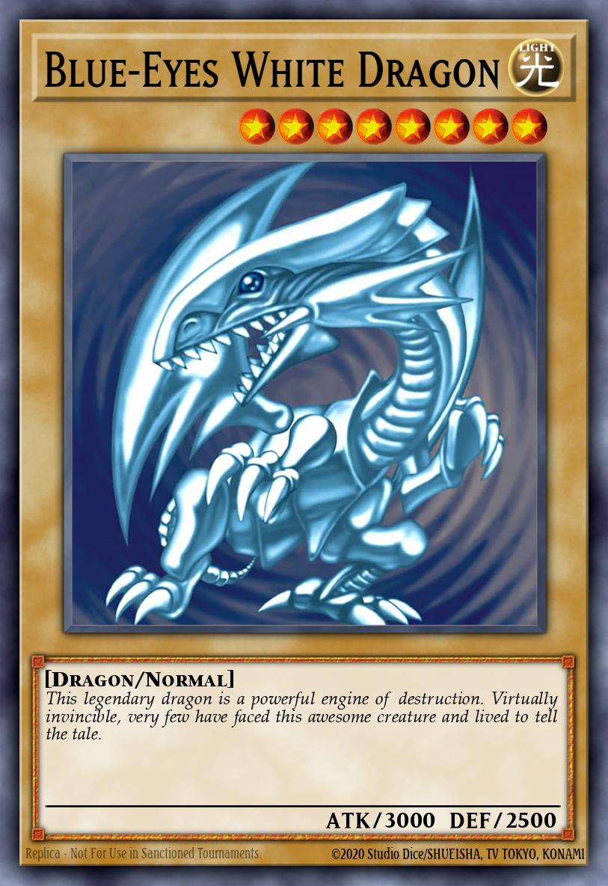 | These are basic Monster Cards without special abilities. Many Normal Monsters have higher Attack Points and Defense Points than Effect Monsters, instead of having special abilities. |
| 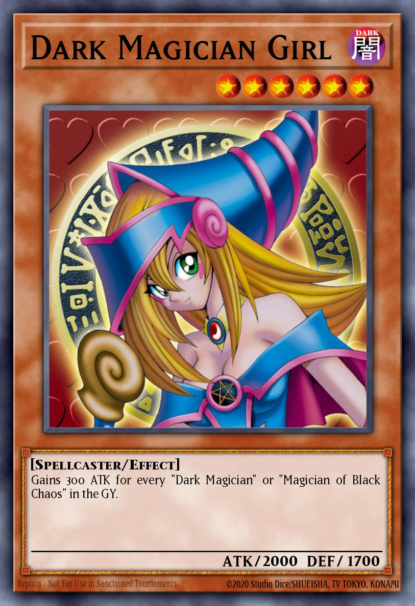 |
An Effect Monster is a monster that has special abilities. The effects of these monsters are split into four categories:
|
| Continuous Effect |
This effect is active while the Effect Monster Card is face-up on the field. The effect starts when the face-up monster appears on the field, and ends once that monster is gone or is no longer face-up; there is no trigger for its activation.
Example: "Monsters with 2000 or less ATK cannot declare an attack" |
| Ignition Effect |
You use this type of effect just by declaring its activation during your Main Phase. There are some Ignition Effects that have a cost to activate, like discarding cards from your hand, Tributing a monster, or paying LP.
Example: "You can Tribute this card, then target 1 monster on the field; destroy that target" |
| Quick Effect |
These are special monster effects that you can activate even during your opponent's turn. These types of effects have a Spell Speed of 2, even though all other monster effects have a Spell Speed of 1.
Example: "When an effect is activated (Quick Effect): You can target 1 monster in your GY; Special Summon it." |
| Trigger Effect |
These effects are activated at specific times, such as "during the Standby Phase" or "when this monster is destroyed".
Example: "When this card is destroyed by battle and sent to the GY: Target 1 card on the field; destroy that target." |
| Flip Effect |
Flip effect is a part of the Trigger Effect. This is an effect that is activated when a face-down card is flipped face-up. This can happen when it is Flip Summoned, attacked while face-down, or flipped face-up by a card effect. These effects start with the word "FLIP:" on the card.
Example: "FLIP: Draw 1 card." |
| 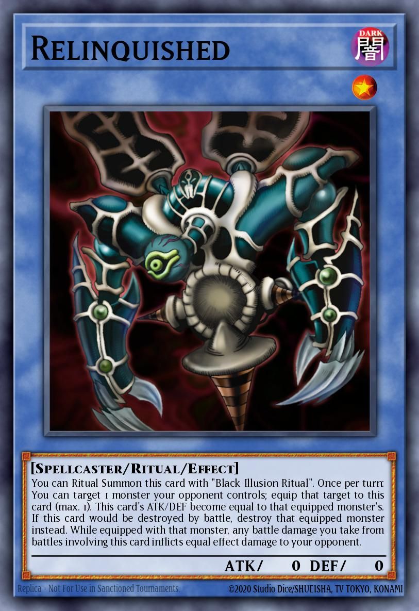 | Ritual Monsters are special monsters that are Special Summoned with a specific Ritual Spell Card, along with a required Tribute. Ritual Monster Cards are placed in the Main Deck and cannot be Summoned unless you have all the proper cards together in your hand or on the field. |
| 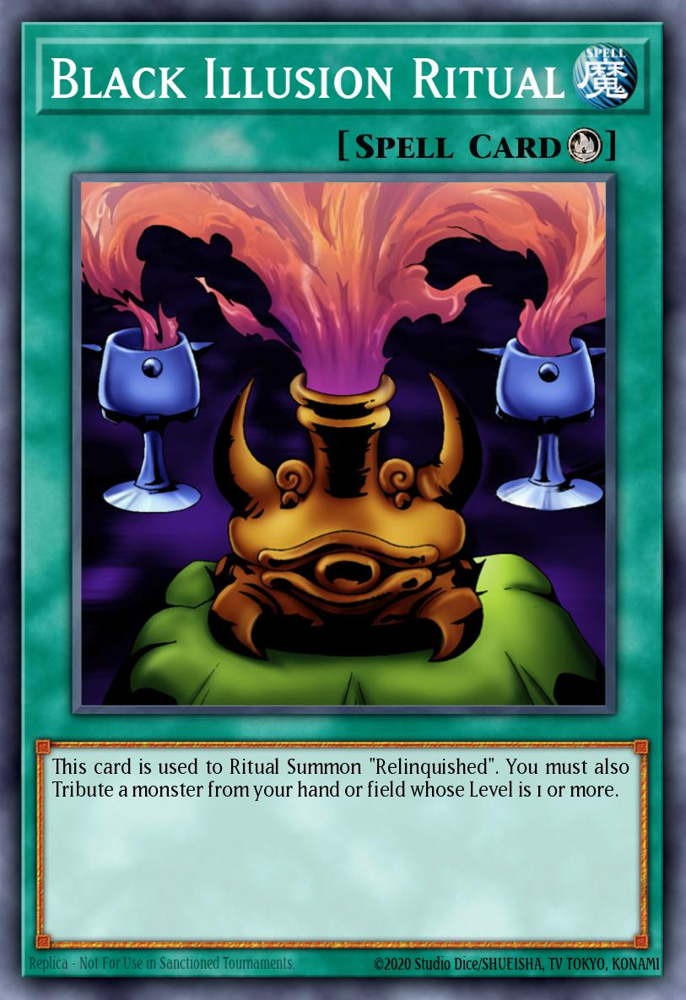 |
How to ritual Summon
|
When activating a card (1) that has an effect that performs a Ritual Summon from the Graveyard for example, a valid Ritual Monster (2) must be present in the Graveyard. If you tribute a Ritual Monster (3) so that it meets the requirements to Summon (2) from the Graveyard, if (3) will be sent to the Graveyard as a result and (3) is also a valid target that can be Summoned with (1), you cannot Summon (3) from the Graveyard.
References:- YGOrg Database of Official OCG Rulings: "Revendread Origin", "Revendread Slayer"
- YGOrg Database of Official OCG Rulings: "Nekroz Cycle", "Nekroz of Clausolas"
| 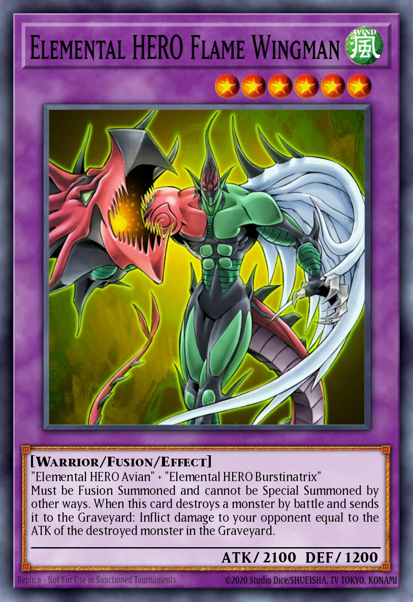 | Fusion Monsters placed in your Extra Deck (not in your Main Deck). They are Summoned by using the specific monsters listed on the card (called Fusion Materials) combined with a Summoning card like "Polymerization". |
| 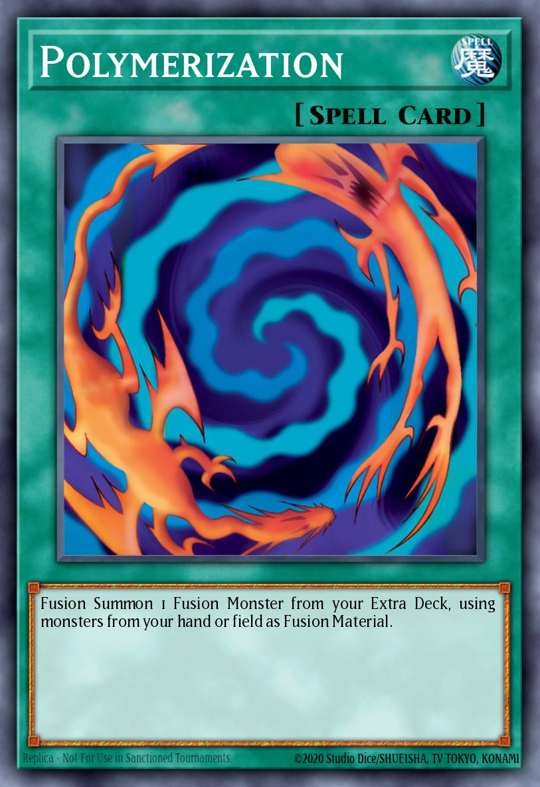 |
How to fusion Summon
|
| 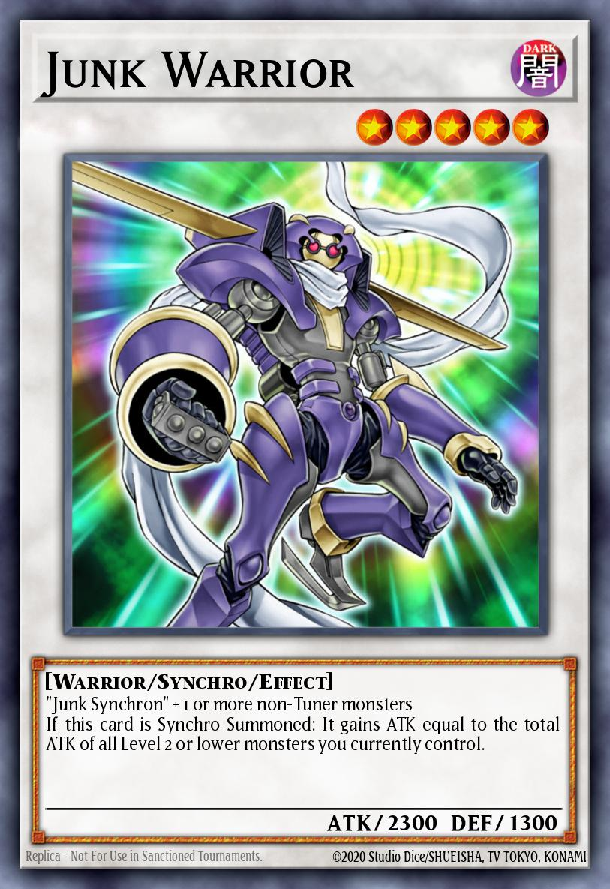 | Synchro Monsters are placed in the Extra Deck, separate from the Main Deck. You can Special Summon a powerful Synchro Monster to the field in an instant just by using the Levels of your monsters. They can be Synchro Summoned from the Extra Deck by sending 1 face-up "Tuner" monster and any number of face-up non-Tuner monsters from your field to the Graveyard, when the sum of all their Levels is exactly equal to the Level of the Synchro Monster. |
| 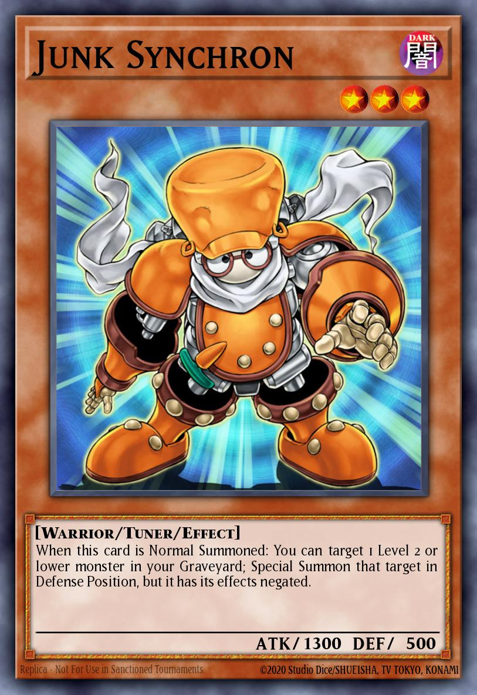 |
Tuner Monsters
In order to Synchro Summon a Synchro Monster, you need 1 Tuner (look for "Tuner" next to its Type). The Tuner monster and other face-up monsters you use for the Synchro Summon are called Synchro Materials. The sum of their Levels is the Level of Synchro Monster you can Summon. |

|
|
| 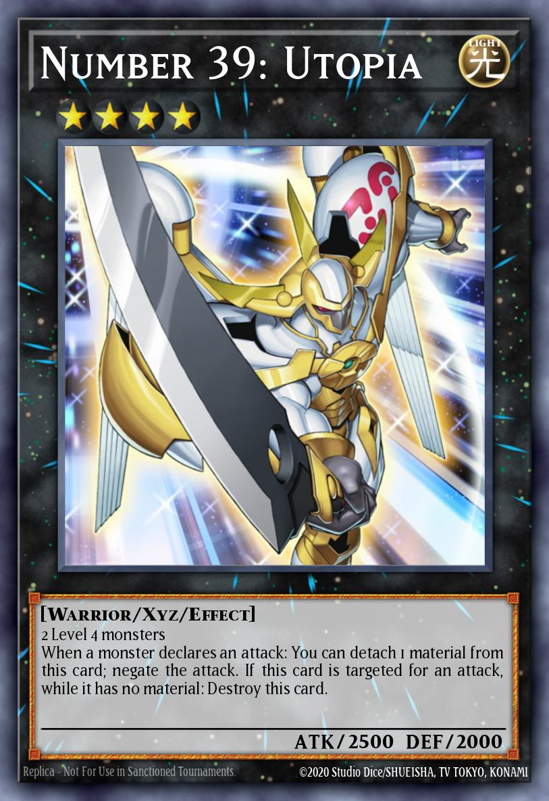 |
Xyz Monsters (pronounced "ikseez") can be Xyz Summoned whenever you control monsters that are the same Level. Xyz Monsters start in your Extra Deck, not in your Main Deck, and wait for you to call them into action.

When an Xyz Monster tells you to "detach" a material, take one of the stacked Xyz Material cards beneath your Xyz Monster and put it in the Graveyard. |

|
|
Monsters that are used to Xyz Summon are called "Xyz Materials", and are placed underneath the Xyz Monster, to show that they are attached to it.
- Monsters that have become Xyz Materials are not treated as cards on the field.
- When an Xyz Monster leaves the field, all of the Xyz Materials attached to it are sent to the Graveyard.
- If an Xyz Monster is flipped face-down, or becomes controlled by the opponent, the Xyz Materials are not sent to the Graveyard. They remain attached to the Xyz Monster.
| 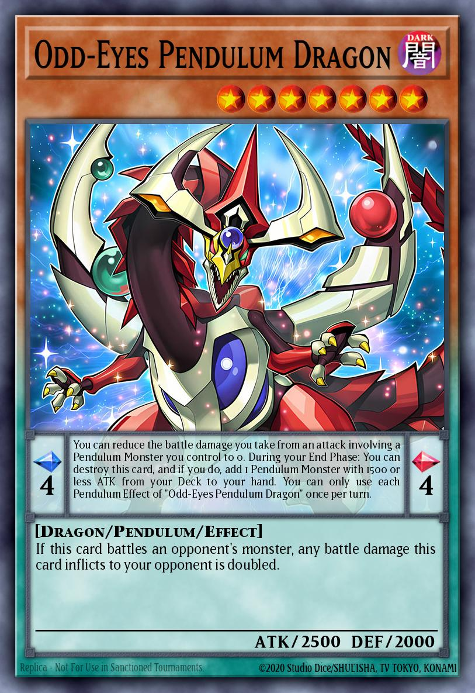 |
Pendulum Monster Cards are a unique kind of card that blurs the line between Monsters and Spells! They can be Summoned as monsters to attack or defend, or you can activate them as Spell Cards in your Pendulum Zones to activate extra special abilities and allow you to Pendulum Summon!

Whenever one of your Pendulum Monster Cards on the field (regardless of which Zone it is in, or even if it is a monster or not) would be sent to the Graveyard, place it face-up on your Extra Deck instead. You can Pendulum Summon it back to the field later! Monsters Pendulum Summoned from the Extra Deck must be Summoned to the Extra Monster Zone or your Main Monster Zone pointed to by a Link Monster. |

|
|
| 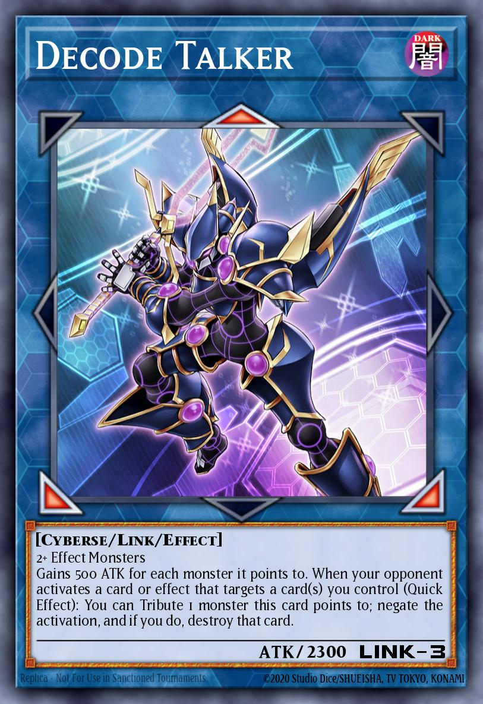 |
A Link Monster are monsters with the ability to increase the number of monsters you can Summon from your Extra Deck for other Link monsters and Pendulum monsters. In addition to the 1 Extra Monster Zone you can usually use, you can also Summon Link and Pendulum monsters from the Extra Deck to any of your Main Monster Zones that has a Link Monster's red arrow pointing to it.

If 2 Extra Monster Zones are available, you can choose either one to Summon your monster. If there is a Link Monster already on the field, you can Link Summon a monster in one of your Zones it points to. |

|
|

Some common terms to know when dealing with Link Monsters: - Link Arrows: these are the big red triangles surrounding the picture of the monster. Only the red ones are Link Arrows. - Link Rating: the number in the lower right hand corner of a Link Monster where the DEF would normally be located. This is the number of Link Arrows the monster has, and also the number of Link Materials you need to use to Link Summon it. - Link Material: these are the face-up monsters on your side of the field that you use to Link Summon. - points to: the Monster Zones and/or monsters that are directly adjacent to the tip of a Link Arrow are the zones and/or monsters that Link Monster "points to". A Decode Talker placed in an Extra Monster Zone, for example, points to the Main Monster Zone directly above it, as well as the Main Monster Zones diagonally downwards to the left and right. A Decode Talker placed in the center Main Monster Zone does not point to anything, as there are no Monster Zones directly adjacent to the tip of its Link Arrows. - linked: a monster is "linked" if one or both of the following is true: 1. A Link Arrow is pointing to this monster. 2. This monster is a Link Monster and one of its Link Arrows is pointing to another monster. - co-linked: only Link Monsters can be "co-linked". Two Link Monsters are "co-linked" if they have Link Arrows that point at each other. In the following formation, Firewall Dragon is "co-linked" to 2 monsters: Link Spider and Honeybot.

- Official KONAMI's article, archived from the original
In addition to being linked or co-linked, there's a special type of "linked" state that a monster can be in: "Extra Linked". Only Link Monsters can be Extra Linked, and this state only occurs when a series of co-linked Link Monsters is built that connects a Link Monster in an Extra Monster Zone to a Link Monster in the other Extra Monster Zone. Each monster in the series must be co-linked to each other monster it is linked to in the series.
In the example below, we've placed a series of co-linked monsters from the right-hand Extra Monster Zone over to the left-hand Extra Monster Zone where the opponent has Link Summoned "Decode Talker". Each of our Link Monsters is co-linked to each other Link Monster it's linked to in the series, so when we Link Summon the final monster in the series, each monster in the series becomes Extra Linked in addition to being co-linked and linked, including the opponent's "Decode Talker". Any Link Monster that is co-linked to one of the monsters in this series is also Extra Linked, even if it's not contributing towards making the monsters Extra Linked. For example, an extra "Honeybot" to the left or right of one of the "Firewall Dragons" would also be Extra Linked.

Under normal circumstances you cannot occupy both Extra Monster Zones with monsters from your Extra Deck. There is one, and only one, exception to this rule: If Link Summoning to the second Extra Monster Zone would create a complete series of Extra Linked Link Monsters, you may Link Summon a monster to that Extra Monster Zone to complete that series. So in the example below, you are allowed to Link Summon a monster to the left-hand Extra Monster Zone if and only if that monster would be co-linked to the left-hand "Firewall Dragon", causing all of the monsters to become Extra Linked.

Link Monsters can be co-linked on diagonals, an Extra Link with only three monsters is then possible as well.
References:- Official KONAMI's article, archived from the original
Normally, 1 monster equals 1 Link Material. But when you use a Link Monster as material for another Link Summon, you can count it as either 1 monster, or as a number of monsters equal to its Link Rating. For example, if you want to Summon a Link 3 monster that requires 2 or more materials in its "recipe", you can either use 3 monsters (each counts as 1 material) or else a Link 2 Link Monster (counts as 1 or 2 materials) and a second monster (counts as 1 material).
References:Link Monsters have no DEF and cannot ever be in Defense Position. They can't be changed to Defense Position by a card effect. They can't even be flipped into face-down Defense Position.
References:If you take control of your opponent's monster in the Extra Monster Zone, it moves to your Main Monster Zone. When it goes back to your opponent, it goes to their Main Monster Zone, not the Extra Monster Zone.
References:As long as the materials meet the requirements of the Link Monster you want to Summon, you can use a Token or Trap Card that is treated as a monster as the Link Material.
References: